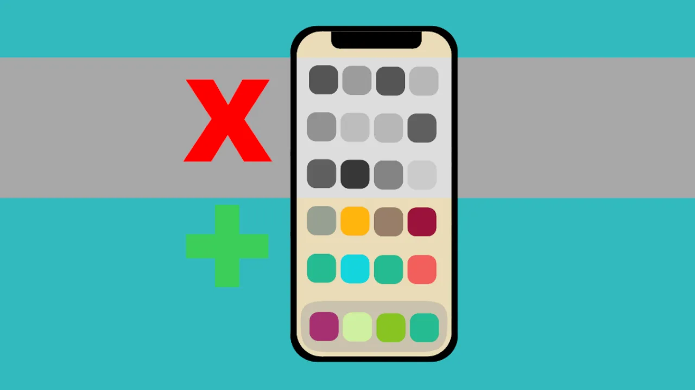
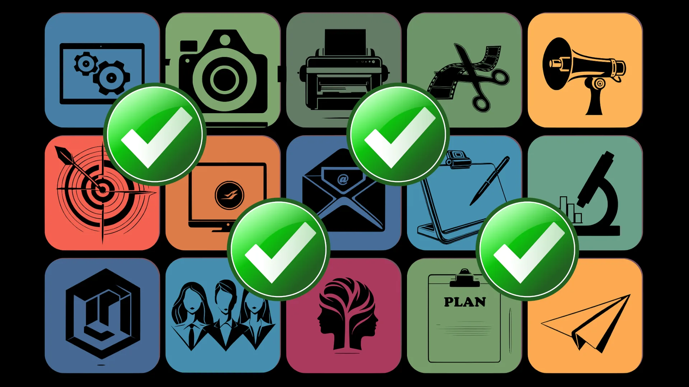

IntroductionDocumentationBased
on DebianPrevious page:
IntroductionIndex page:
DocumentationNext page: Based on
DebianKicksecure - A Security Hardened Linux
Distribution
Kicksecure is a free and open-source Linux distribution that aims to
provide a highly secure computing environment. It has been developed
from the ground up according to a formidable -- and time proven --
defense in-depth security design. In the default configuration,
Kicksecure provides superior layered defenses of protection from many
types of Malware.
Kicksecure is a complete computer operating system. Numerous
applications come pre-installed with safe defaults which can be used
immediately upon installation with minimal user input.
Security Hardened
Copy or share this direct link!https://www.kicksecure.com/wiki/About/#Security_HardenedForum (BBCode)[url=https://www.kicksecure.com/wiki/About/#Security_Hardened]Security Hardened[/url]
Kicksecure uses an extensively security reconfigured of the Debian
base (Hardened) which can be run either on bare metal or inside multiple
virtual machines (VMs) on top of the host OS. Its
architecture provides a substantial layer of protection from malware.
Applications are pre-installed and configured with safe defaults to make
them ready for use with minimal user input.
Secure and Privacy-Protected Software Installation and Upgrades
Copy or share this direct link!https://www.kicksecure.com/wiki/About/#Secure_and_Privacy-Protected_Software_Installation_and_UpgradesForum (BBCode)[url=https://www.kicksecure.com/wiki/About/#Secure_and_Privacy-Protected_Software_Installation_and_Upgrades]Secure and Privacy-Protected Software Installation and Upgrades[/url]
The security and privacy of default software management (installing
and upgrading software) are much better, making it harder for anyone to
send you targeted, malicious software updates. This only applies to
system updates over Tor, not all your internet traffic. Learn more

Curated Software Pre-Selection
Copy or share this direct link!https://www.kicksecure.com/wiki/About/#Curated_Software_Pre-SelectionForum (BBCode)[url=https://www.kicksecure.com/wiki/About/#Curated_Software_Pre-Selection]Curated Software Pre-Selection[/url]
In Kicksecure no unnecessary software is installed by default such as
exim, samba, cups etc. At the same time security enhancing software like
AppArmor, sdwdate and tirdad are preinstalled. Learn more.

Optimized defaults
Copy or share this direct link!https://www.kicksecure.com/wiki/About/#Optimized_defaultsForum (BBCode)[url=https://www.kicksecure.com/wiki/About/#Optimized_defaults]Optimized defaults[/url]
Kicksecure enhances all kinds of security settings, including: kernel
hardening, Strong Linux User Account Isolation, disabling legacy login
methods, higher quality randomness (entropy), network hardening, root
access restrictions, application-specific hardening and much more. Learn more.
Hardening by Default
Kicksecure is a hardened operating system designed to be resistant to
viruses and various attacks. It is based on Debian in accordance with an
advanced multi-layer defense model, thereby providing in-depth security.
Kicksecure provides protection from many types of malware in its default
configuration with no customization required.
Kicksecure Hardening Features
Feature
Description
user-sysmaint-split: multiple boot modes for better
security
Kicksecure increases safety by enforcing use of separate accounts
for daily use and administrative tasks. This is called user-sysmaint-split. It prevents
daily used, high-risk software with large attack surface that can be
hacked such as a web browser from
gaining full administrative ("root")
access. Therefore, otherwise trivial deployment of rootkits and firmware trojans (a
type of malware / hardware
backdoor) is prevented.
Improves security by disabling unnecessary SUID binaries and
hardening file permissions, thereby reducing attack surface and limiting
privilege escalation opportunities.
Default Package Selection
No unnecessary software is installed by default such as exim, samba,
cups that otherwise gets installed by some flavors of Debian.
[1]
torified_updates
Secure and privacy-protected operating system (apt)
upgrades
This helps protect against targeted, malicious software upgrades.
By default, when using APT (Advanced Package Tool) to upgrade the
system or install new software, Kicksecure uses torified operating
system upgrades. This means all default APT package manager source files
are set to only update over the Tor anonymity network. This makes sure
that update servers cannot know who the user is or their IP address. As
a result, this mitigates targeted malicious software attacks. This
protection is not only much stronger than what iPhones or Android
devices offer, but it's also better than what most Linux distributions
provide.
Worst: Most iPhone / Android devices [2]
connect to official app stores, and these app stores know the user's
identity and IP address, creating a large risk for targeted attacks.
[3]
Better: Some Linux distributions like Debian do not link the
user's identity to update servers, but they still update over the
clearnet (regular internet) using the user's real IP address by
default.
Best: Kicksecure ensures all system updates are done over the
Tor network by default. This way, update servers cannot know the user's
identity or IP address. [4]
This only applies to system updates. This does not mean that all of
your internet traffic is automatically torified (protected by Tor). See
also: Privacy Goals and Non-Goals of
Kicksecure
This is enabled by default and prevents links from being
unintentionally opened in supported browsers.
No open ports by default.
Kicksecure provides a much lower attack surface since there are
no open server ports by default unlike other Linux distributions (such as Debian). All
unsolicited incoming connections are rejected.
Bluetooth is disabled by default to reduce attack surface. Manual
user activation is required when Bluetooth is needed.
[8]
Hardened SSH client and server configuration
Secure SSH defaults reduce
attack surface and strengthen cryptographic settings for both SSH client
and server configurations. [9]
Protection from supply chain attacks
Digital
Signature Policy: Kicksecure enforces digital signature verification
at every stage of its development. Source code commits, git tags, build
process and final downloads must all adhere to the policy. Unsigned code
execution and deployment are strictly prohibited. This policy mitigates
supply chain attacks by ensuring authenticity and integrity throughout
the software development and distribution process.
Protects in-house source code from malicious Unicode
Defenses are implemented to detect and prevent adversarial
Unicode encodings in source code which could hide vulnerabilities in
reviews. [10]
Forcibly powers off the system in emergency situations (for
example, via a panic key sequence), helping protect sensitive data
during physical compromise scenarios.
The system can be inspected from a trusted external environment
without booting the suspect operating system (OS),
enabling offline or detached scanning of storage and boot components. It
also supports early boot instrumentation, allowing inspection and
measurement of boot and startup components at a very early stage before
the full operating system is running.
Digital
Signature Policy: Users are consistently encouraged to apply the
process of Verifying Software Signatures. This is critical
because verifying digital signatures protects users from compromised,
tampered, or malicious software. It ensures authenticity, safeguards
integrity, and forms a central part of the project's overall security
model.
Build
documentation: Users are encouraged to build their own images, with
documentation and forum support.
Development Vision
Introduction
Copy or share this direct link!https://www.kicksecure.com/wiki/About/#IntroductionForum (BBCode)[url=https://www.kicksecure.com/wiki/About/#Introduction]Introduction[/url]
The reason the Free and Open Source Kicksecure project exist is to
offer a system that provides a reasonable security-hardened baseline, with the
in-built flexibility to apply additional hardening dependent upon the
user's threat model, hardware capabilities, motivation and knowledge.
[11]
Security Guide Limitations
Copy or share this direct link!https://www.kicksecure.com/wiki/About/#Security_Guide_LimitationsForum (BBCode)[url=https://www.kicksecure.com/wiki/About/#Security_Guide_Limitations]Security Guide Limitations[/url]
While many valuable security guides exist, better security and
privacy for the masses necessitates software that applies a majority of
hardening instructions by default. The table below provides a further
rationale for this position.
Security Guide Limitations
Factor
Description
Initial vulnerability
When a base system is first installed, various security
customizations are not yet applied. All users are vulnerable during this
period.
Recipient insecurity
Security principles do not exist in a vacuum:
Even after applying various security hardening steps,
correspondence/network partners might have serious, unaddressed
vulnerabilities.
Some security problems cannot be solved by individuals and may rely
on factors in the broader ecosystem. For example:
Advanced adversaries perform continual surveillance of all Internet
traffic and attempt to attribute collected meta-data to
individuals.
Following a guide to enhance entropy is insufficient if Tor relays
being used are insecure.
Often personal security can only be improved if the security of
others is also improved.
Reliance on human memory
Adequate hardening often depends on discovering and remembering
to apply all necessary steps from favorite security guides.
Error risks
Manually applying security guide steps can lead to mistakes that
render the whole procedure ineffective.
Time requirements
Security guide steps are often lengthy and cover many different
facets of computing.
Secure guide discovery
There are countless security/hardening guides available on the
Internet. It is impossible to follow them all and serious research is
required to find valuable new resources.
Incompleteness
Logically there is not one definitive, all-encompassing security
guide. This means some users harden the kernel and install CPU microcode
updates, while others rely on sandboxing and implement better random
number generators, and so on. Most users miss critical elements because
they are simply not aware they exist.
Currency
Even the best security guides often contain outdated material.
This is especially true for technically detailed or lengthy guides that
canvass many topics.
Publication form
The form of security guides can effect their utility. For
example, those published in blogs and which do not allow comments have
grave disadvantages compared to systems relying on collaborative version
control software (like git) or collaborative websites (such as a wiki).
The reason is contributors can easily fix issues or update
contents.
Popularity
Security guides which have low popularity cannot effect change
and improve security practices if most people are unaware they
exist.
For these reasons Kicksecure will remain focused on enabling the
majority of (reasonable) hardening settings by default, and allowing
additional settings to be easily enforced via installable packages. For
further information on this topic, see: The
Problem with Security Guides and How We Can Fix It.
Implementation of
the Securing Debian Manual
Copy or share this direct link!https://www.kicksecure.com/wiki/About/#Implementation_of_the_Securing_Debian_ManualForum (BBCode)[url=https://www.kicksecure.com/wiki/About/#Implementation_of_the_Securing_Debian_Manual]Implementation of
the Securing Debian Manual[/url]
The Kicksecure project has been studying the Securing
Debian Manual, which is a security hardening guide for Debian.
Kicksecure is applying the operating system hardening, suggested in the
manual, by default as much as reasonably possible.
Unfortunately, the Securing Debian Manual has not been updated in a
while [12] and is therefore already somewhat dated. For
this reason Kicksecure also documents the up-to-date security hardening
knowledge we gather in our wiki as a public service.
For attribution, the wiki Template:Sdebian is added to all wiki pages where
the Securing Debian Manual has been considered. A list of these pages
can be found on Special:WhatLinksHere/Template:Sdebian. Example for
the disclaimer below:
Copy or share this direct link!https://www.kicksecure.com/wiki/About/#Planned_FeaturesForum (BBCode)[url=https://www.kicksecure.com/wiki/About/#Planned_Features]Planned Features[/url]
The Kicksecure development roadmap includes various security
improvements:
Many features are
already available for testing, see Test wiki page.
Encrypted and/or
authenticated system-wide DNS (domain name resolution)
[13] to mitigate against threats from DNS cache poisoning
aka DNS
spoofing. [14] See also DNS Security.
Copy or share this direct link!https://www.kicksecure.com/wiki/About/#Kicksecure_Development_GoalsForum (BBCode)[url=https://www.kicksecure.com/wiki/About/#Kicksecure_Development_Goals]Kicksecure Development Goals[/url]
Kicksecure is a security-hardened Linux Distribution. (Mobile
version not planned yet.)
This section details potential future security enhancements for
Kicksecure.
Third parties (such as users or the modding community) cannot
provide (security) upgrades either due to locked bootloaders, which
cannot be unlocked due to vendor decision and due to unavailability of a
security bug which could unlock the bootloader.
Even if bootloaders can be unlocked there might not be an adequate
operating system upgrades available from third parties, such as the
modding community. Either due to unpopularity of the devices among
modding developers and/or due to technical challenges.
Ability to upgrade (security fixes) devices; replace operating
system; bootloader freedom vs bootloader non-freedom:
iPhones and some Android devices have locked boot loaders that
cannot be unlocked. This restricts user freedom and makes replacing the
operating system impossible without a verified boot bypass exploit. In
case the vendor deprecated security support for the device, the only
choices users realistically have is to keep using an insecure device, or
to buy a device which still has security support. Similarly, locked
bootloaders also prevent gaining administrator (root) access.
Some Android devices do allow unlocking the bootloader but not with
custom verified boot keys, causing a decrease in security.
Some Android devices (such as the Nexus or Pixel devices) support
full verified boot with custom keys that can be used with alternative
operating systems.
In conclusion, when using iPhone/Android devices that still receive
security updates, the iPhone/Android approach provides strong protection
against malware, meaning those platforms are impacted much less than
Windows or Linux desktops. [24] Despite the many
downsides (Mobile Devices Backdoors in Most Phones Tablets
Etc, Data Harvesting by Most Phones, ...), the security
model of popular mobile operating systems often affords better
protection when attempting to prevent any malicious and unapproved party
from establishing a foothold in their ecosystem. In the process, the
user's and the security community's ability to audit and control what
their devices are actually doing is severely diminished. Due to a Conflict of Interest this comes at the expense of
transferring power from the user to the developers, user freedom
restrictions, Tyrant Security, War on General Purpose Computing.
Kicksecure will not implement these kinds of user freedom
restrictions since it is not required nor desirable. The capability to
replace the operating system or gain administrator access will remain
fully supported. Many popular device operating systems utilize security
technologies which restrict user freedoms. In contrast, Kicksecure aims
to utilize the same security concepts for the goal of empowering the
user and increasing protection from malware.
It is theoretically possible to provide some of the same iPhone /
Android security concepts on a Linux computer too. Steps have already
been made to apply mobile device security concepts to Linux
distributions such as security-misc and
apparmor.d.
Security technologies like hardened kernels or verified boot used by
popular mobile operating systems could also be ported to Linux
distributions. Community contributions are gladly welcomed! Here is a
list of potential security enhancements for Kicksecure:
ram-wipe: Wipe RAM at shutdown to
help prevent information extraction from memory.
Design
Usability by Default
Copy or share this direct link!https://www.kicksecure.com/wiki/About/#Usability_by_DefaultForum (BBCode)[url=https://www.kicksecure.com/wiki/About/#Usability_by_Default]Usability by Default[/url]
While developed with security-focused design goals, Kicksecure
remains highly flexible. The layered approach to security allows
applications to retain usability. Kicksecure can be used for everyday
"general-purpose computing" or for more risky activities that require a
highly advanced security-centric platform. Since Kicksecure is Freedom
Software users may install any application of their choosing -- no
restrictions are placed on how Kicksecure can be used, customized or
modified.
Kicksecure aims to maximize usability by default so it can be
utilized as an everyday, multipurpose operating system by users of all
skill levels.
Kicksecure Usability Features
Feature
Description
Debian Usability Fixes
Better download and instalation instructions.
Better usability installer. Uses Calamares by default.
[48]
bash-completion installed by default so for example by
typing sudo apt install libreo followed by the TAB key a
word completion to libreoffice will be suggested.
zsh installed as default shell that supports TAB word
completion, colorful output, etc.
Simplicity and flexibility
Package vm-config-dist
simplifies shared folder set up for virtual machines.
[51]
Package usabilty-misc is
installed by default, increasing flexibility and providing numerous,
miscellaneous usability features. [52]
Live Mode
Live Mode can be
activated from the boot menu. Live Mode discards all data after
shutdown, leaving no trace of the session.
System maintenance panel
System
Maintenance Panel (sysmaint-panel) provides a graphical
interface for common administrative tasks such as software updates,
package installation, account management, password changes, keyboard
layout configuration, and system checks.
Keyboard layout tooling
Tools are provided for simplified keyboard layout configuration
system-wide (console and GUI), in early boot (GRUB menu and disk
encryption passphrase prompt), and in recovery environments. See also:
Keyboard Layout.
Popular applications
Popular applications come pre-installed and configured with safe defaults to
make them ready for use right out of the box.
Non-interactive package management helpers
Convenience wrappers are provided for scripting and automation,
such as apt-get-noninteractive and
dpkg-noninteractive, and a reset helper such as apt-get-reset.
File and permission inspection helpers
Convenience tools such as chmod-calc are pre-installed to simplify inspecting
file and directory permissions.
Data protection
Sensitive user data is protected by state-of-the-art
cryptographic tools:
Local user data can be protected by Linux Unified Key Setup (LUKS)
which uses strong encryption to safeguard personal information. See Full Disk
Encryption.
Tool for setting and managing a GRUB bootloader password,
strengthening protection against physical attacks by restricting
unauthorized boot menu access.
Copy or share this direct link!https://www.kicksecure.com/wiki/About/#Based_on_DebianForum (BBCode)[url=https://www.kicksecure.com/wiki/About/#Based_on_Debian]Based on Debian[/url]
Tip: Since Ubuntu is a Debian derivative, online help
for Ubuntu most often works for Kicksecure.
In oversimplified terms, Kicksecure is just a collection of
configuration files and packages by Debian and Kicksecure. Anything
possible in "vanilla" Debian
GNU/Linux can be replicated in Kicksecure.
Likewise, most problems and questions can be solved in the same way.
For example: "How do I install VLC Media Player on Kicksecure?" -- "The
same way as in Debian apt install vlc."
Copy or share this direct link!https://www.kicksecure.com/wiki/About/#Based_on_Freedom_SoftwareForum (BBCode)[url=https://www.kicksecure.com/wiki/About/#Based_on_Freedom_Software]Based on Freedom Software[/url]
Many people wonder why developers would spend countless hours of
their own time to build an operating system and then give it away.
Kicksecure developers believe it is immoral to benefit from those Free / Freedom
Software components and give back nothing to the community. We stand
on the shoulders of giants. Kicksecure and many other Libre software
projects are only made possible because people invested time in writing
code and kept it accessible for the public's benefit. Of course, a lot
of us just find it great fun.
User Population / Promotion
Copy or share this direct link!https://www.kicksecure.com/wiki/About/#User_Population_/_PromotionForum (BBCode)[url=https://www.kicksecure.com/wiki/About/#User_Population_/_Promotion]User Population / Promotion[/url]
Copy or share this direct link!https://www.kicksecure.com/wiki/About/#Kicksecure_VersionForum (BBCode)[url=https://www.kicksecure.com/wiki/About/#Kicksecure_Version]Kicksecure Version[/url]
Each Kicksecure release is based on a particular version of
Debian:
Users can manually check the Kicksecure version at any time by
following Check
Version.
Release Schedule
Copy or share this direct link!https://www.kicksecure.com/wiki/About/#Release_ScheduleForum (BBCode)[url=https://www.kicksecure.com/wiki/About/#Release_Schedule]Release Schedule[/url]
Kicksecure does not have a fixed release schedule. A new stable
release only becomes available when it is deemed ready.
Support Schedule
Copy or share this direct link!https://www.kicksecure.com/wiki/About/#Support_ScheduleForum (BBCode)[url=https://www.kicksecure.com/wiki/About/#Support_Schedule]Support Schedule[/url]
VMs: One month after a new stable version of
Debian is released, Kicksecure VMs may no longer be supported on
any older version of Debian. All users must upgrade the Debian platform
promptly after the deprecation notice to continue using Kicksecure
safely.
ISO: One month
after a new stable version of Kicksecure is released, older
versions will no longer be supported. All users must upgrade the
Kicksecure platform promptly to remain safe.
Version 18: Will be recommended as soon as it is
available, even if Qubes R4.3 is only
available as RC (release candidate).
[54]
Deprecation Notices
We aim to announce deprecation events one month in advance to
remind users to upgrade in the kicksecure.com
news forum. Stay Tuned!
All users must upgrade the respective platform promptly to remain
safe.
Next Steps
Learning more about Kicksecure is the best way to determine whether
it is a suitable solution in your personal circumstances. The following
chapters are recommended:
The Warning page to
understand the security limitations of Kicksecure.
The implied Trust placed in
Kicksecure when it is used.
The Security Guide, Advanced Security Guide and Design chapters detailing the Kicksecure
specifications, threat model and implementation.
Other relevant Documentation explaining how to use Kicksecure
safely.
Footnotes
Debian bookworm Xfce live ISO installed exim, samba, cups by
default.
Most iPhone / Android phones that are sold by mobile carriers or
manufacturers have locked bootloaders. These phones are often packaged
with spyware installed by default, which cannot be removed. There may be
rare exceptions to this rule, hence "most" and not "all". These
exceptions are not the point which shall be made in this comparison. See
the "Libre Android" column for what is theoretically possible.
Debian installed using a Debian bookworm Xfce live ISO calamares
came with an /etc/apt/sources.list file using http:// (unencrypted) instead of the
more secure https:// (TLS) by
default.
The Linux kernel has a side-channel information leak bug. It is
leaked in any outgoing traffic. This can allow side-channel attacks
because sensitive information about a system's CPU activity is leaked.
It may prove very dangerous for long-running cryptographic operations.
Research has demonstrated that it can be used for de-anonymization of
location-hidden services.
Better encryption is achieved via preinstalled random number
generators, specifically: * Loading of the jitterentropy-rng kernel
module by default. * Installation of the user space entropy gathering
daemons haveged and jitterentropy-rng by default. * See also: Dev/Entropy.
It is also accepted that no "perfect configuration" exists that can
make a system invulnerable against advanced adversaries. Further,
systems that are excessively hardened can become almost unusable except
for the most advanced individuals.
Securing Debian Manual: still referring to: * sysvinit
and not mentioning systemd * initrd and not
mentioning dracut
DNS spoofing results in traffic being diverted to the attacker's
computer (or any other computer).
There is no "Libre Android" at time of writing. It's only a concept
to illustrate a point. There is no "perfect" Android distribution.
GrapheneOS has verified boot but root
access is refused in default builds. Replicant allows root access,
but no references were found that Replicant makes use of verified boot
yet. It's not relevant to pick any specific Android distribution for the
sake of making the point "iPhone and Android Level Security for Linux
Desktop Distributions" no specific Android distribution was chosen for
this compassion. A "perfect" Android distribution checking all "green
yes" is possible in theory. It doesn't exist due to policy decisions.
(GrapheneOS vs root in default builds vs device selection / features.)
There are no technical reasons for non-existence. See also this Overview of
Mobile Projects, that focus on either/and/or security, privacy,
anonymity, source-available, Freedom Software..
Comes with a lot proprietary software installed by default.
That would require an exploit. In comparison, a compromised
application on the Linux desktop running under user has
full access to all information which that user has access to, including
all files, keystrokes and so on. The exception is when mandatory
access control (MAC) is in use and successfully confines that
application.
Occasionally there are exploits that allow applications to gain
root, but as time passes more of these vulnerabilities are being
fixed.
On the Linux desktop the process of Preventing malware from Sniffing the Root Password is cumbersome and
unpopular. Therefore any compromised application on the Linux desktop
could lead to root compromise. This in turn might compromise the
bootloader, kernel, or even hardware. It is difficult to detect malware, remove
a rootkit and indicators of compromise are rare.
Computer (non-mobile) hardware is much more flexible. Storage
devices can be removed from a computer, then added to another computer
as a secondary disk. When booting from an installation assumed to be
uncompromised (by [the same] malware), a search for malware can be
performed on the other disk without executing any code, reducing risk of
infection for the booted disk. This kind of procedure can be performed
reasonably easily by most repair shops, and even non-technical people
can do this without the need for soldering.
Whether to allow the application to participate in the backup and
restore infrastructure. If this attribute is set to false, no backup or
restore of the application will ever be performed, even by a full-system
backup that would otherwise cause all application data to be saved via
adb. The default value of this attribute is true.
If credentials can be provided (full disk encryption password if
used), (super) root will have full access.
Google wants to know where you go so badly that it records your
movements even when you explicitly tell it not to. An Associated Press
investigation found that many Google services on Android devices and
iPhones store your location data even if you've used a privacy setting
that says it will prevent Google from doing so. Computer-science
researchers at Princeton confirmed these findings at the AP's
request.
How it works, according to Google, is that the Android Location
Services periodically checks on your location using GPS, Cell-ID, and
Wi-Fi to locate your device. When it does this, your Android phone will
send back publicly broadcast Wi-Fi access points' Service set identifier
(SSID) and Media Access Control (MAC) data. Again, this isn't just how
Google does it; it's how everyone does it. It's Industry practice for
location database vendors.
As in singling out specific users. Shipping malicious upgrades to
select users only.
Probably same as Linux Desktop Distributions.
Linux distributions usually do not require an e-mail based login to
receive upgrades. Users can still be singled out by IP addresses unless
users opt-in for using something such as apt-transport-tor which is not
the default.
All upgrades are downloaded over Tor. There is no way for the server
to ship legit upgrade packages to most users while singling out specific
users for targeted attacks.
Debian default download link uses D-I. Debian Live uses
Calamares.
Debian comes with a broken /etc/apt/sources.list file
by default. * Debian default /etc/apt/sources.list comes
with a broken deb cd-rom: line. * Debian default
/etc/apt/sources.list comes with http instead
of https by default. * Debian default
/etc/apt/sources.list has only the
debian-security repository enabled by default but not the
debian repository. As a result, no packages are installable
until the user figures out how to add that line to APT sources. When
using Debian Installer (D-I) (not Calamares), installing while not using
a network mirror, Debian default /etc/apt/sources.list
comes empty except for a broken deb cd-rom: line.
On Debian, when installing using D-I (Debian Installer), when
setting a root password during installation, the user must run after a
new installation su followed by
/usr/bin/adduser user sudo and reboot (or re-login) to be
able to user sudo.
It currently only assists with using shared folders in VirtualBox
and KVM when using the official VM images. Virtual machines installed
from an ISO file will need to have the vm-config-dist
package installed manually.
Such as creating default folders, allowing commands to be run
without a password, simplifying the running of OpenVPN as an
unpriveleged user, and much more.
Why? Because it includes much newer software packages. That is what
developers are using and where the development focus lies. Kicksecure is
a small project and does not have a dedicated team for
oldstable support. Therefore, oldstable
support is maintained as a side project.
We believe security software like Kicksecure needs to remain Open Source and independent. Would you help sustain and grow the project? Learn more about our 14 year success story and maybe DONATE!


 This helps protect against targeted, malicious software upgrades.
This helps protect against targeted, malicious software upgrades.